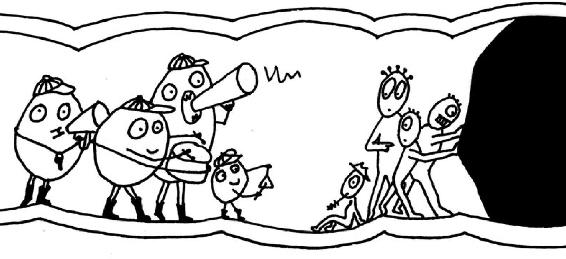

CONSTIPATION CONSTIPATION IS LIKE. You wait for something that just won’t. And, still you have to use a lot of force. Sometimes, in return for all that effort, you get no more than • • • . Or it works, but not very
OFTEN.
Between 10 and 20 percent of people in the United States are constipated. If you want to join this club, you must fulfil at least one of the following conditions: bowel movement less than three times a week; particularly hard stool a quarter of the time, often in pellet form ( • • • ), which is difficult or impossible to pass without help (medication or tricks); no satisfying feeling of emptiness on leaving the toilet.
Constipation results from a disconnect between the nerves and the muscles of the gut when they are no longer working toward quite the same goal. In most cases, digestion and transportation of food through the system are still working at normal speed. It is not until the very end of the large intestine that disagreement arises as to whether the contents need to be expelled right away or not.
The best parameter for assessing constipation is not how often you need to go to the toilet, but how difficult it is. Time spent sitting on the toilet is supposed to be a time of splendid isolation and relaxation, but for those whose experience is not so laid back, it can be a troubling time. There are various levels of constipation. Temporary constipation can be due to traveling, illness, or periods of stress. More obstinate constipation can indicate more long-term problems.
Almost half of us have experienced constipation when traveling. Particularly in the first few days of a trip, it is often difficult to go properly. This can be due to a variety of reasons, but in most cases it boils down to the simple fact that the gut is a creature of habit. The nerves of the gut remember what kind of food we prefer and at what time we prefer to eat it. They know how much we move around and how much water we drink. They know whether it is day or night and what time we usually go to the toilet. If everything goes according to plan, they complete their tasks without complaint and activate our gut muscles to help us digest.
When we travel, we have a lot on our mind. Did we pick up our keys and turn off the iron? We might remember to take a book or some music to keep our brains happy, but there is one thing we always forget—that creature of habit, the gut, is also traveling with us and is suddenly torn from its familiar routine.
We spend the whole day eating prepackaged sandwiches, strange airplane meals, or unfamiliar spices. At the time we would normally be enjoying our lunch break, we’re stuck in traffic or waiting at the check-in counter. We drink less than normal, for fear of having to go to the toilet too often, and dehydrate even more during the flight. And, as if that weren’t enough, we might also have to face a big fat bout of jetlag.
All this does not go unnoticed by the nerves of the gut. They can get confused and put the brakes on until they receive a signal that everything is normal and they can start work again. Even when the gut has done its work despite the confusion, and signals to us that we should seek out the toilet, we add to its woes by suppressing the urge because it happens not to be a convenient time. Also, if we’re honest, travel constipation can often be caused by the “not my toilet” syndrome. Sufferers of this syndrome simply dislike doing their business in unfamiliar toilets. Their biggest challenge is posed by public conveniences. Many people use them only when it’s absolutely necessary, construct elaborate seat sculptures out of toilet paper, or crouch what feels like miles away from the toilet bowl. But even all that doesn’t help those with a serious case of “not my toilet” syndrome. They simply cannot relax enough to finish the work their creature of habit has begun. When that happens, a holiday or business trip can become a rather unpleasant experience.
THERE ARE A FEW little tricks that can be useful for people with brief or mild instances of constipation. These tricks can lower inhibitions and help get things moving in the bowel department.
1.There is a certain foodstuff we can eat to nudge the gut wall into action: fiber. Dietary fiber is not digested in the small intestine and can knock on the wall of the large intestine in a friendly way to say there is someone here who wants to be shown the way out. The best results are produced by psyllium seed husks and the rather more pleasant-tasting plum. Both contain not only fiber, but also agents that draw extra fluids into the gut—making the whole business smoother. It can take two to three days before their effect is felt. So, you can start eating them either a day before your trip or on the first day—whatever feels safer. Those with no plum compartment in their suitcase can buy dietary fiber in tablet or powdered form from their pharmacy or drug store. One ounce (30 grams) is an appropriate daily dose of dietary fiber.
There are two kinds of fiber: water-soluble and insoluble. The latter is better at stimulating movement through the digestive system, but it can often cause stomachaches. Water-soluble fiber does not provide quite such a powerful push, but it does make the contents of the gut softer and easier to deal with. Nature’s design is rather clever: the skins of many fruits contain large amounts of insoluble fiber, while the flesh of the fruit contains more soluble fiber.
Consuming dietary fiber is little help if you do not also consume sufficient fluids. Without the presence of water, fiber binds together in solid lumps. Water makes them swell up into balls. This gives the bored gut something to do while your brain enjoys the in-flight entertainment.
2.Drinking more fluids can only help those who don’t already drink enough. For those who do, drinking even more will not bring about any improvement. But it is a different story if the body gets too little fluid. The gut reacts by extracting more water from the food passing through it. That makes the feces harder. Small children running high temperatures often lose so much body fluid through sweating that their digestive system grinds to a halt. Air travel can cause the body to lose similar quantities of water, even without sweating. The air in the plane is so dry that it extracts fluid from our body without our even noticing. The first sign we have of it is an unusually dry nose. During air travel it is a good idea to try to drink more than normal to keep the water in your body at a normal level.
3.Don’t put yourself under pressure. If you need to go to the toilet, just go—especially if you are a creature of habit like your gut and usually go at an appointed time. If you normally go to the toilet in the morning but suppress the urge because you’re traveling, it is as if you have broken an unspoken agreement with your gut. You gut likes to work according to plan. Pushing digested food back into a holding pattern even just a couple of times trains the nerves and muscles to operate in reverse gear. That can make it increasingly difficult to change gears back again. This is compounded by the fact that the longer the feces stay in the gut, the more time the body has to extract fluid from them, making the business ever harder. A couple of days of suppressing the urge can lead to constipation. So, if you still have another week of your camping holiday to go, you’d better get over your fear of the communal toilets before it’s too late!
4.Probiotics and prebiotics—living, beneficial bacteria and their favorite food—can breathe new life into a tired gut. It is a good idea to consult your pharmacist about this or turn to the sections on probiotics and prebiotics later in this book.
5.Take more walks? That is not always a successful strategy. A sudden decrease in exercise can cause the gut to slow down, it’s true. But for those who already exercise enough, more movement will not help them attain digestive nirvana. Tests have shown that it takes extremely strenuous exercise to achieve a measurable effect on the movement of the gut. So, unless you are planning to engage in some kind of power sport, forcing yourself to take an extra walk will have little effect—on your ability to go to the toilet successfully, at any rate.
THOSE WITH A taste for the unusual might want to try the rocking squat technique. Sitting on the toilet, bend your upper body forward as far as possible toward your thighs, then straighten up to the sitting position again. Repeat this a few times and it should begin to work. No one watches you while you are on the toilet and you have a moment of free time, so what could be a better opportunity for an unusual experiment?
HERE ARE SOME strategies for times when household remedies and rocking on the toilet fail.
In more stubborn cases of constipation, the nerves of the gut are not just confused or sulking, they are in need of a bit more support from their owner. If you have tried all the little tips and still don’t leave the toilet singing a merry tune, it may be time to rummage in another box of tricks. But you should only do this if you already know the reason for your problem. If you don’t know the precise cause of your constipation, you cannot choose the right remedy.
If constipation comes on very suddenly or lasts for an unusually long time, you must consult your doctor. The problems may stem from undiagnosed diabetes or thyroid problems, or you may just be a natural-born slow transporter.
Laxatives
THE AIM OF taking laxatives is easily stated: to produce the perfect little pile. Laxatives can coax even the shyest gut out of its shell. Laxatives come in various types, which work in different ways. For all hopelessly constipated travelers, slow transporters, campsite toilet objectors, or hemorrhoid-hindrance conquerors, here’s a look at that box of tricks.
The Perfect Little Pile by Means of Osmosis . . . IS WELL formed and not too hard. Osmosis is water’s sense of equality. When one region of water contains more salt, sugar, or similar substances than another, the less rich water will flow toward the richer water until both contain the same amount of solute and they can live on in peaceful equilibrium. The same principle helps to revive wilting lettuce—simply soak the sad salad in water and half an hour later your greens will be crispy again. Water flows into the lettuce because its cells contain more salts, sugars, and so on than the pure water in the bowl.
Osmotic laxatives use the same principle of equality. They contain certain salts, sugars, or tiny molecular chains that can travel into the large intestine. Along the way, they gather all the water they can to make the act of going to the toilet as comfortable as possible. But overdoing it with such laxatives causes them to extract too much water. Diarrhea is a sure sign that you have taken too many.
With osmotic laxatives, you can choose whether to take sugars, salts, or short molecular chains to help retain water in the gut. The salts, such as sodium sulfate (also known as Glauber’s salt) are rather rough on us. They take effect very suddenly, and if they are taken too often, they disrupt the body’s electrolyte balance.
The most widely known laxative sugar is lactulose. It has a useful double effect, both retaining water in the large intestine and feeding the flora of the gut. Those little creatures can help, for example, by producing some substances that act as stool softeners and others that stimulate movement in the gut wall. But this can also cause unpleasant side effects. Overfed or misplaced bacteria can produce gases, causing cramps and flatulence.
Lactulose is formed from the milk sugar, lactose, when milk is heated to high temperatures. Pasteurization involves heating milk briefly, so pasteurized milk contains more lactulose than raw milk. UHT (ultra-high-temperature-processed) milk contains more lactulose than pasteurized milk, and so on. Non-milk laxative sugars are also available, including sorbitol. Sorbitol occurs naturally in some kinds of fruit—plums, pears, and apples, for example. That is one reason for the reputation plums have as a natural laxative and for warnings that too much fresh apple juice can cause diarrhea. Since human beings can barely absorb sorbitol (or lactulose) into their bloodstream, it is often used as a sweetening agent. It then appears on food labels as E420, and this explains why sugar-free cough candies, for example, always include the warning, “Excessive consumption may have a laxative effect.” Some studies have shown that sorbitol has a similar effect to lactulose, but causes fewer side effects overall (no unpleasant wind).
Of all laxatives, the short molecular chains are most easily tolerated by the body. They have the kind of complicated names that molecular chains love—polyethylene glycol, for example, known as PEG for short. They don’t disrupt the body’s electrolyte balance like salts do, and they do not produce wind like sugars do. The length of the chain is often included in the name: PG-3350, for example, is a chain made up of enough atoms to give it the molecular weight 3350. It is much better than PEG-150, because that compound is made of such short chains that they can be inadvertently absorbed by the gut wall. That might not necessarily be dangerous, but it can certainly confuse the nerves of the gut, since polyethylene glycol is definitely not part of our natural diet.
For this reason, short chains like PEG-150 are not contained in laxatives, but they are used in products such as skin cream, where they perform a very similar service—they make the skin more supple. It is unlikely that they are harmful, but the matter is still not finally settled. Laxatives based on PEGs contain only indigestible chains, and for that reason they can be taken over longer periods without causing problems. The latest studies show there is no risk of addiction or long-term damage. Some studies indicate that these substances can even improve the gut’s protective barrier.
Osmotic laxatives work not only by making the feces moister, but also by sheer mass. The more moisture, well-fed gut bacteria, or molecular chains are contained in the gut, the more motivated it will be to move. This is the basic principle of the peristaltic reflex.
The Perfect Little Pile by Means of Slippery Stool . . . SOUNDS LIKE A children’s party game. Slippery stool—lots of fun but maybe quite messy. But in fact this is the technique known medically as fecal lubrication. Robert Chesebrough, the man who invented Vaseline®, swore by a spoonful of the petroleum jelly every day. Swallowing petroleum jelly probably has the same effect as swallowing other fat-based fecal lubricants—an overdose of indigestible fat coats the goods in transit, making for an easier exit. Chesebrough lived to the ripe old age of ninety-six, which is quite surprising since eating a fat-based lubricant every day will cause the body to lose too many fat-soluble vitamins. They get covered in the fatty lubricant and go the same way as the feces. This can cause vitamin deficiencies that lead to illness, especially if fecal lubricants are taken too often or in excessive amounts. Petroleum jelly is not one of the official fecal lubricants (and really shouldn’t be eaten), but the time-honored candidates such as liquid paraffin are hardly less suitable for regular use. They can be useful as short-term treatments—for example, in the presence of hemorrhoids or small but painful injuries to the anus. In such cases, it can be good to make the feces softer to avoid pain or further injury during defecation. However, gel-forming fibers available from the pharmacy do just as good a job and are less dangerous and better for the body.
The Perfect Little Pile by Means of Hydragogues . . . IS ACHIEVED by giving the gut a big kick up the butt. These laxatives are ideal for those with very shy, lethargic gut nerves. There are various tests to find out whether that applies to you. One test involves swallowing little medical pellets that doctors then X-ray as they pass through the gut. If, after a certain time, the pellets are still spread throughout the tract, having failed to gather by the back door as they should, hydragogues are the appropriate treatment.
Hydragogues latch onto a couple of the receptors that the gut waves around inquisitively. They then send signals to the gut to stop extracting fluid from the food passing through and to fetch more water from other parts: muscles—shake a leg! To put it bluntly, cleverly constructed hydragogues simply boss nerve cells and water transporters around. When osmotic laxatives fail to provide enough stimulus or softness, a shy gut needs a few clear commands. If hydragogues are taken before bedtime and left to do their thing overnight, the gut will react the next morning. If time is an issue, the express mail service of a suppository can usually deliver the message within half an hour.
The commando squad need not rely on chemical weapons—some plants work in much the same way. These include aloe vera and senna, for example. But they do have one rather interesting side effect. Anyone who has ever wished to dye the inside of their gut black is welcome to have a go. This discoloration is not dangerous, and it fades with time.

Hydragogues encourage the gut to keep things moving in the right direction.
However, some scientists have reported effects of an excess of hydragogues or aloe vera that would be rather less fun—if they turn out really to be caused by those substances—as they include damage to the nerves. The reason is that nerves that are bossed around too much eventually become overwrought. When that happens, they withdraw into themselves, like snails when you tap their feelers. For this reason, patients with long-term problems should not take hydragogues more than every two or three days.
The Perfect Little Pile by Means of Prokinetics
. . . IS THE very latest thing—for two reasons. These drugs can only support the gut in doing what it naturally does anyway, and they cannot issue any unwanted orders. They work along the same lines as a loudspeaker. The exciting thing for many scientists is that they can help in an extremely targeted way. Some prokinetic agents affect only one single receptor, while others are not absorbed into the bloodstream at all. However, scientists are still researching the way many of these substances work, and new ones are just now appearing on the market. So, anyone who does not absolutely need to try something new should stay on the safe side and rely on better-tested drugs for now.
The Three-Day Rule
MANY DOCTORS PRESCRIBE laxatives without explaining the three-day rule, although it is easy to remember and is a useful aid. The large intestine has three sections: the ascending, transverse, and descending colon. When we go to the toilet, we usually empty the last section. By the next day, it has filled up again and the game starts all over again. Taking a strong laxative may cause the entire large intestine—all three sections—to be emptied. It can then easily take three days before the large intestine is full again.
1. Normal situation: one-third of the large intestine is emptied and it is full again by the next day.
2. After taking a laxative: the entire large intestine is emptied and it may take three days to fill up again.
Those unfamiliar with the three-day rule will likely start to get nervous during that time. Still no bowel movement? And before they know it, they’ve taken the next laxative tablet or powder. This is a vicious and unnecessary circle. After taking a laxative, the gut deserves a couple of days’ respite. Monitoring for normal bowel movements should begin on the third day. Slow transporters may need to give a helping hand to their gut after two days.